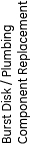
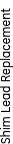

Table 1: Service Procedure Safety Requirements
| Service Procedure (X = Required Item for Procedure) | ||||||||||||||||
|---|---|---|---|---|---|---|---|---|---|---|---|---|---|---|---|---|
| Magnet | Other | |||||||||||||||
 |  |  |  |  |  |  |  |  |  |  | ||||||
| 1 | Cryogenic vent system installed per requirements. | - | - | - | X | X | X | X | X | - | X | X | X | X | X | - |
| 2 | Special permits obtained, if required by local authorities, for use of inert gasses / cryogens during magnet commissioning and service procedures. | X | X | - | X | X | X | X | X | X | X | X | X | X | X | - |
| 3 | Mobile van ceiling hatch secured open. | X | X | X | X | X | X | X | X | - | X | X | X | X | X | - |
| 4 | Room ventilation fan tested and running (room exhaust at ceiling). | - | X | X | - | X | X | X | X | - | X | X | X | X | X | - |
| 5 | Room ventilation fan tested and running (room exhaust at floor). | - | - | - | X | - | - | - | - | - | - | - | - | - | - | - |
| 6 | Vent magnet and inspect exhaust. | X | X | X | X | X | X | X | X | - | - | X | X | X | X | - |
| 7 | Second person present and trained in safety practices for procedure being performed. | X | X | X | X | X | X | X | X | X | X | X | X | X | X | X |
| 8 | Fully functional land-line telephone (with emergency response numbers clearly posted beside it) in known an immediately available location near Magnet Room. | X | X | X | X | X | X | X | X | X | X | X | X | X | X | - |
| 9 | Magnet Room doors secured open to assist in room ventilation. Ensure cross ventilation to outside or other large volume non-workspace. | X | X | X | X | X | X | X | X | - | X | X | X | X | X | X |
| 10 | O2 monitor on site, tested and functional for both visual and audible alarms, whenever cryogens are being stored or dispensed. Portable device 2287000 for magnets up to and including 3.0T. | X | X | X | X | X | X | X | X | - | X | X | X | X | X | - |
| 11 | Cryogen safety kit (46-271137G1) on site for use. Kit includes cryogen gloves, face shield and goggles. | X | X | X | X | X | X | X | X | - | X | X | X | X | X | - |
| 12 | Nonferrous safety shoes. | X | X | X | X | X | X | X | X | X | X | X | X | X | X | X |
| 13 | Inspect the Service Platform thoroughly prior to use. Make sure the platform is in acceptable condition. | X | X | X | X | X | X | X | X | X | X | X | X | X | X | - |
| 14 | Secure area and display signs altering or intended process. | X | X | X | X | X | X | X | X | X | X | X | X | X | X | X |
| 15 | Verify Dewar transportation path is clear. | - | - | - | X | X | X | X | - | - | - | - | - | - | - | - |
| 16 | Dewars stored in a ventilated area. | - | - | - | X | X | X | X | X | - | - | - | - | - | - | - |
| 17 | Not-in-use gas cylinders secured to wall with protective cap in place. | X | - | - | X | X | X | X | X | - | X | X | X | X | X | - |
| 18 | Before removing protective cap on gas cylinder, secure to wall or nonmagnetic cart. | X | - | - | X | X | X | X | X | - | X | X | X | X | X | - |
| 19 | Move gas cylinders / Dewars without wheels using hand trucks designed for purpose (Nonmagnetic gas cylinder card 46-305717G1). | X | - | - | X | X | X | X | X | - | X | X | X | X | X | - |
| 20 | Keep gas cylinders / Dewars in upright position at all times. | X | - | - | X | X | X | X | X | - | X | X | X | X | X | - |
| 21 | Keep ferromagnetic equipment / objects out of magnet room when magnet is ramped. | - | - | - | - | X | X | X | X | X | X | X | X | X | X | X |
| 22 | Use only non-magnetic tools in the magnet room when the magnet is ramped. Note: the cast bronze tools (46-320273G4) contain 3% iron, which make the tools more attractive to higher field strength magnets. Do not bring the tool kit into a field >500 G. | - | - | - | - | X | X | X | X | X | X | X | X | X | X | X |
| 23 | Wear long-sleeved shirt and apron designed for cryogenic servicing. | - | - | - | X | X | X | X | X | - | X | X | X | X | X | - |
| 24 | Inspect all pressure regulators for proper functioning. | X | - | - | X | X | X | X | X | - | X | X | X | X | X | - |
| 25 | Inspect all pressure relief valves and ensure proper configuration to achieve recommended pressure (3.g., 20 psi). | X | - | - | X | X | X | X | X | - | X | X | X | X | X | - |
| 26 | Inspect all valves and fittings for leaks. | X | - | - | X | X | X | X | X | - | X | X | X | X | X | - |
| 27 | MRU installed and tested prior to magnet ramp. | - | - | - | - | - | - | X | X | X | X | X | X | X | X | - |
| 28 | Post "Ramped Magnet" warning signs included in kit 46-258770G4. | - | - | - | - | - | - | X | - | - | - | - | - | - | - | - |
| 29 | Install the Security Zone sign, at eye level, on all doors leading into the magnet room. Install the sign on both sides of the door if the door opens outward from the magnet room. | - | - | - | - | - | - | X | - | - | - | - | - | - | - | - |
| 30 | Post "Authorized Personnel Only" signs (2289812) at entrance to MR suite. | X | X | X | X | X | X | X | X | X | X | X | X | X | X | - |
| 31 | Notify hospital administrator when magnet is ramping. | - | - | - | - | - | - | X | - | - | - | - | - | - | - | - |
| 32 | Remove all ferromagnetic material from magnet room before ramping or shimming magnet. | - | - | - | - | - | X | X | X | X | - | - | - | - | - | - |
| 33 | Use only single Dewar connection (I.e., no daisy-chain connections). | - | - | - | X | X | X | X | X | - | - | - | - | - | - | - |
| 34 | Identify and label Dewars as "full" or "empty"; label Dewar storage area. | - | - | - | X | X | X | X | - | - | - | - | - | - | - | - |
| 35 | Remove frost from valve operators on magnet after each Dewar charge. | - | - | - | X | X | X | X | - | - | - | - | - | - | - | - |
| 36 | Notify hospital engineering personnel prior to use of any equipment (I.e., heat guns, propane torches, welding equipment, etc.) that could set off the fire alarm system. | X | X | X | X | X | X | X | X | X | X | X | X | X | X | - |
| 37 | Identify and understand the properties and operation of the site's fire suppression system (i.e., water sprinkler, halon, CO2, etc) and how to respond to alarms. | X | X | X | X | X | X | X | X | X | X | X | X | X | X | - |
| 38 | Reduce magnet helium vessel pressure to 0.2 psig before performing service. | - | X | - | - | - | X | X | - | - | X | X | X | X | - | - |
| 39 | Use product-defined tools and personal protective equipment (such as gloves, goggles and protective clothing) when removing or installing passive shim material / assemblies. | - | - | - | - | - | - | - | - | X | - | - | - | - | - | - |
| 40 | Make sure the 5, 100, & 200 Gauss levels are specified for the site (NOTE: For active shield magnets, this information is in the Pre-Installation Manual. For non-active shield magnets, the magnetic field must be measured using either 46-306801G1 or 2293050). | - | - | - | - | - | - | X | - | X | - | - | - | - | X | X |
| 41 | Plan clear service path without obstacles and wide enough to walk through with the device being serviced. The path should be as far from the magnet as practical, avoid high flux density fields, and as much as possible in a field strength of less than 200 Gauss. | - | - | - | - | - | - | - | - | X | - | - | - | - | X | X |